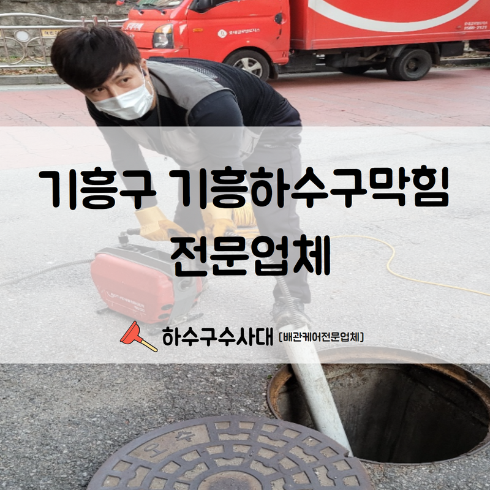
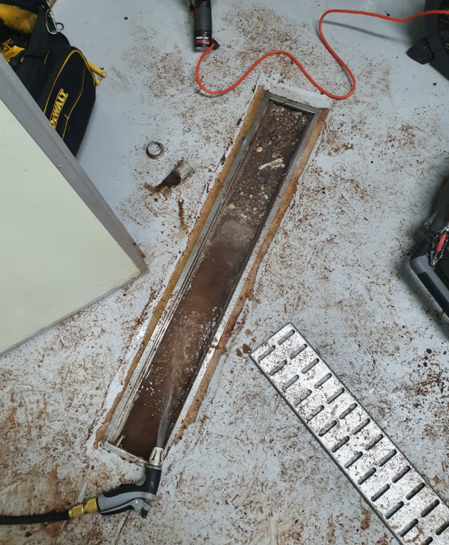
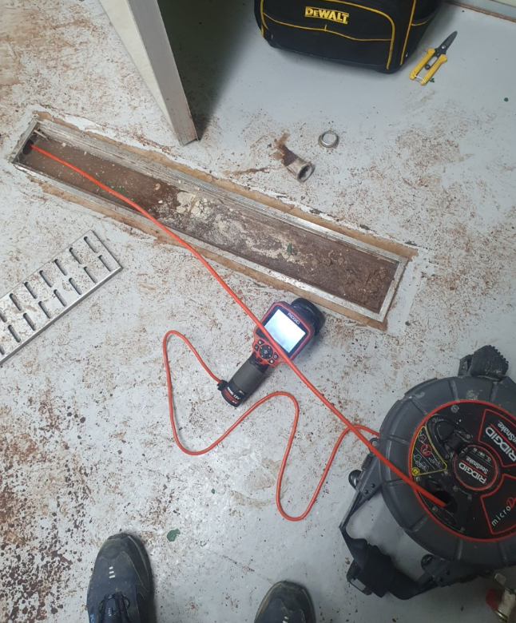
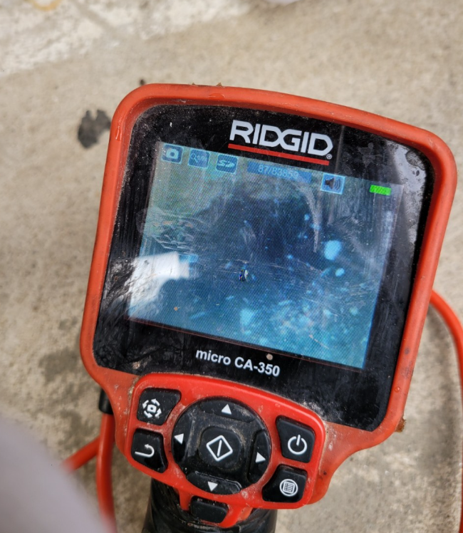
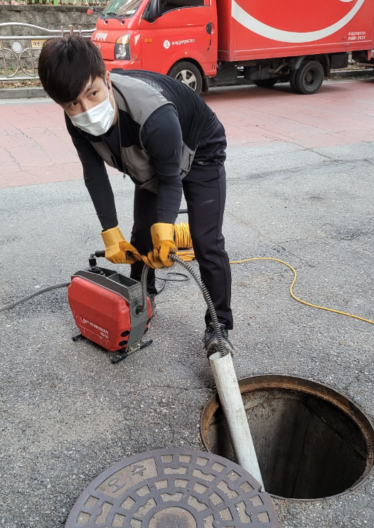
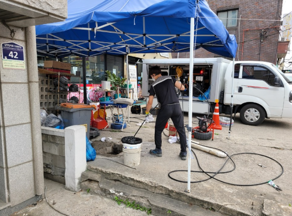
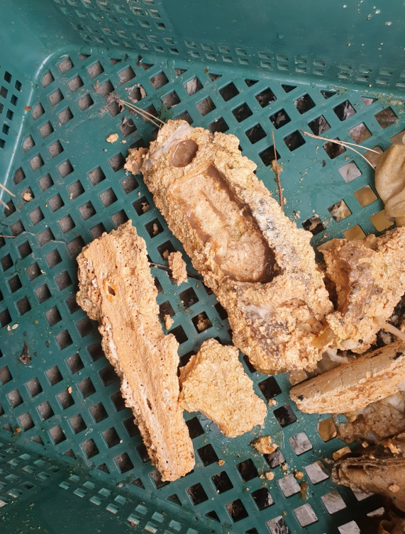

🏠 기흥구 기흥하수구막힘 전문업체 신속한 고압세척으로 문제를 해결해 드렸습니다!
용인 기흥 하수구막힘 전문 시공 후기

📋 작업 개요
- 위치: 용인 기흥, 기흥, 용인
- 서비스 유형: 하수구막힘, 배관막힘, 뚫는업체, 고압세척
- 작업 일시: 2022. 8. 12. 13:49
- 업체명: 하수구수사대 (010-5615-2118)
🔍 문제 상황
안녕하세요.하수구수사대 입니다.반갑습니다.
기흥구 기흥하수구막힘 전문업체 시공현장을 확인해 보겠습니다.
대형 상가 건물에서 가게를 하고 계시는 한 사장님의 의뢰를 받고 현장에 다녀왔는데요. 어느 날부터인가 벌레들이 자꾸만 늘어나고 악취도 심해져 원인이 무엇일까 생각을 해보니 하수구 때문인 것 같다고 하셨는데요.
그래서 주변 이웃들의 소개로 저희 기흥구 기흥하수구막힘 전문업체 하수구수사대를 알게 되셨고 곧장 전화를 주셔서 예약을 잡아주셨습니다. 꽤 큰 상가였기에 많은 분들께서 공동으로 사용을 하고 계시고 피해 또한 클 수밖에 없어 최대한 빠른 일정 조율 후 찾아뵈었습니다.
필요한 장비들을 챙겨 시간에 맞춰 현장에 도착했습니다.
이 곳은 대형 상가여서 그런지 하수구 막힘 현상이 굉장히 자주 일어났다고 해요. 그 때마다 업체를 불러 해결을 했지만 그 때뿐이고 워낙 이용하는 사람들이 많다 보니 끊임 없이 하수구 막힘 현상이 지속적으로 발생되어 큰 스트레스를 받고 계셨죠.

🔎 원인 분석
💡 전문가 진단: 기흥구 기흥하수구막힘 전문업체 시공현장을 확인해 보겠습니다.
저희는 챙겨간 장비들을 하나씩 이용해 원인 찾기에 돌입하였고 오래 된 전문가들이 현장에 투입하여 작업을 진행하기 때문에 빠르게 원인 파악을 할 수 있었습니다. 또한 기흥구 기흥하수구막힘 전문업체 하수구수사대는 고가의 다양한 장비들도 모두 보유하고 있습니다.
규모가 작은 업체 같은 경우에는
다양한 장비를 모두 보유하기란 어렵기 때문에 업체 선정을 할 경우 이것저것 많은 것을 확인해 보고 선택해 주시는 것 또한 중요합니다. 먼저 내시경을 통해 배관들의 상태를 살펴보았습니다. 배관 같은 경우 내부가 굉장히 좁고 길기 때문에 눈으로 쉽게 확인을 하는 것이 불가능합니다.
그렇기에 장비를 이용해 꼼꼼하고 세심하게 관찰을 해주어야 완벽한 해결 또한 가능한데요. 내시경 장비를 통해 어떠한 배수관이 막혀있는지 그 이물질이 어떤 기계로 제거가 될 지 파악하며 제거 작업을 준비했습니다.
원인 파악을 먼저 진행하였습니다.
내시경 카메라 호스를 배관에 삽입 할 때에는 아주 작은 크기의 구멍을 뚫어 그 안에 삽입시킨 후 배관을 확인할 수 있는데요. 이러한 작업을 위해 의뢰자분들께 사전에 설명을 충분히 드리고 있는데요.

🔧 작업 과정
구멍을 뚫는다는 것이 낯설고 혹여나 구멍으로 물이 새 거나 다른 피해가 발생하면 어떡하나 걱정을 하시는 분들이 굉장히 많으시더라고요. 하지만 구멍을 뚫어 내부를 확인하고 추후에 원래 상태로 복구를 시켜놓고 작업을 마무리 짓기 때문에 이 부분은 전혀 걱정하실 필요가 없습니다.
내시경 카메라를 삽입해 상태를 살펴보았습니다.
음식점 포함 다양한 상점들이 모여있다 보니 배관 안에는 많은 찌꺼기 및 슬러지들이 잔뜩 껴있는 것을 확인할 수 있었습니다. 다행히도 복잡한 과정을 필요로 할 만큼 딱딱한 물건이나 까다로운 물질이 들어있는 상태는 아니었기에 고압 세척만으로도 해결이 가능한 부분이었는데요.
고압 세척 작업은 말 그대로 배수관을 세척해 주는 작업입니다. 이물질이 잔뜩 껴 지저분해진 배수관을 마치 새것처럼 세척을 해드렸죠. 배수관이 오래 되지 않은 상태여서 교체의 필요도 없었기 때문에 굉장히 빠른 시간 안에 해결이 가능한 부분이었습니다.
본격적인 고압 세척을 진행했는데요.
내부 크기를 체크하여 고압 세척 호스가 들어갈 수 있을 정도의 크기로 배수관을 절단하고 그 곳에 세척 호스를 삽입해 작업을 진행했습니다. 굉장히 강력한 강도의 물을 분사하여 안에 남아 있던 찌꺼기들을 모두 제거해 주었는데요.
진행하는 과정에서 구정물이 생겨나는 것을 막을 수 없지만 저희는 고압 세척을 진행한 후 발생 된 구정물이나 이물질, 등까지 모두 정리를 해드리고 작업 마무리를 짓고 있습니다. 애초에 구정물을 최소화 하기 위해 작업 시 비닐을 이용해 보양을 한 상태로 진행을 하고 있습니다.
배수관 같은 경우에는
굳이 막히지 않은 상태여도 주기적으로 체크해 주고 세척을 해주시는 편이 좋습니다. 특히나 이번에 방문한 대형 건물은 막힘 현상을 미리 예방하기 위한 좋은 방법 중 하나라고 할 수 있는데요.
일 년에 한 두번 정도는 주기적인 점검을 통해 배수관 확인을 해주시는 것이 좋습니다. 이물질을 제거하고 내시경 카메라로 깨끗해진 배수관을 보여드리며 작업을 마무리 지었는데요. 날파리와 악취들로 고민을 하셨던 의뢰자분들께서 작업 과정을 보시면서 속 시원하다며 기뻐하셨습니다.


✅ 작업 완료
문의 사항이나 예약을 원하시면 유선상으로도
모두 가능하니 주저 말고 전화 주시기 바랍니다.
경기도 용인시 기흥구 동백중앙로 191 8층 c8736호




⚠️ 하수구 배관 막힘 예방 및 관리 가이드
- ✅ 머리카락, 비닐, 물티슈 등 물에 분해되지 않는 이물질은 하수구 유입을 절대 금지해 주세요.
- ✅ 하수구 거름망을 씌우고 모여진 이물질은 주기적으로 쓰레기통에 바로 비워주셔야 합니다.
- ✅ 배관 노후가 심할 경우 이물질이 더 쉽게 걸리므로 주기적인 배관 세척(고압세척 등)을 권장합니다.
- ✅ 작업 후 1년 이내 재발 시 하수구수사대에서 무상 A/S 보증 서비스를 제공합니다.
💡 핵심 정리
- 확실한 장비 작업(내시경 점검 및 샤프트 스케일링)으로 원인을 뿌리 뽑습니다.
- 작업 후 1년 이내에 동일한 부위 재발 시 100% 무상 A/S 서비스를 보장합니다.
- 서울 · 경기 · 인천 전 지역에 24시간 언제든 긴급 출동할 수 있도록 항시 대기 중입니다.
❓ 자주 묻는 질문 (FAQ)
🚨 용인 기흥 하수구막힘 문제로 고민이신가요?
정확한 원인 진단과 확실한 시공으로 재발 없는 해결을 약속드립니다.
24시간 긴급 출동 | 서울 · 경기 · 인천 전지역 | 1년 내 재발 시 무상 A/S